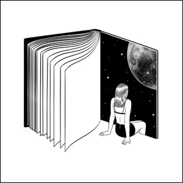
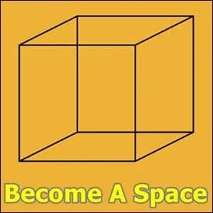
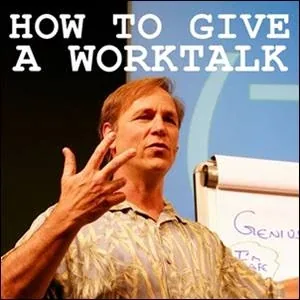
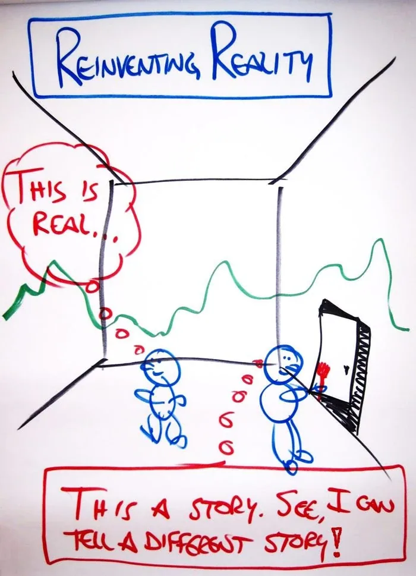

The Muse on Strikingly
-
We human beings are archetypal in nature. We have the capacity to DIRECTLY interact with archetypal aspects of the Universe.
This capacity is designed into our structure as a potential, not as a given.
Specific learnings and experiential initiations are required for us to be 'grown up' enough, alert enough, attentive enough, and aware enough to accurately perceive and deftly navigate Archetypal interactions, either within ourselves, between ourselves, in groups, and directly with the Universe at large.
That we have an Archetypal constitution is obvious as soon as you walk through the Forum Romanum - the ruins of ancient Rome.
How is it that such a space can be created millennia ago and yet still inspire thousands of Edgeworkers and Possibilitators each year to explore the columns and chambers with respectful awe, touched by familiar yet uncommon yearnings to place their attention beyond everyday concerns?
Let the journey continue!
-
Your Archetypal Nature
Modern culture does not educate you about how to make use of your Archetypal nature in daily life.
But the Universe waits, hoping you will make the special efforts needed to awaken and occupy your Archetypal Body so that you can come out and play.
You have 5 Bodies at your fingertips: Physical Body, Emotional Body, Intellectual Body, Energetic Body, and Archetypal Body.
When you relocate your Point Of Origin to living in the Context of Archiarchy, you will naturally learn to occupy each of your 5 Bodies one after the other. It is the way.
Since modern culture does not want you to have your own Authority, your Center, your Presence, your Voice, etc., modern culture tries to convince you to suppress the energy and intelligence of your Emotional Body first and all the other bodies by implication.
For the sake of this conversation, it may empower your actions if you assume that you are stupid in anything but your Intellectual Body. Then you have the proper perspective to do whatever it takes to inhabit and skill-up your other 4 Bodies. Assuming you are a beginner, you activate what certain Zen practitioners , starting from not-knowing and practicing:
- Until you can slow down your PHYSICAL BODY to move at the speed of Love... until you reorient out of mere survival... until you replace 'comfort' and the illusion of 'safety' as your highest priorities with Transformation along the Path...
- Until you take back your INTELLECTUAL BODY's Attention, Split Your Attention, and Observe Yourself... until you shoot all the Voices, avoid making Assumptions, Expectations, Conclusions, Judgements, Stories... or holding Beliefs and Positions...
- Until you are able to Consciously Feel your Feelings and Emotions in your EMOTIONAL BODY, stay Unhookable, stay in your Uncontaminated (archived — not captured) Adult Ego State, take ownership of your Reactivity, your Projections ...
- Until you have your Gremlin seated next to you on a short leash as an ally... until you are able to stay Centered with Bubble (archived — not captured) and Grounding Cord in your ENERGETIC BODY, have and use your 13 Tools on your energetic Toolbelt, can Conscious Declare, Consciously Choose, and Consciously Ask, until you can Create and Navigate Space and go Nonlinear and Unreasonable through the Great Labyrinth of Spaces...
...until you have Built enough Matrix and accomplished these extraordinary skills - 'extraordinary' meaning 'beyond the thoughtware of modern culture - why should the Muse bother to visit you? You will be too inattentive, too reactive, too careless, too childish, too cerebral, too asleep to notice and engage her offerings and to collaborate with Her.
But you can. You can heal and learn. You can get initiated. You can - if you do whatever it takes - you can grow up enough to consciously inhabit your first 4 Bodies. By then you will have the clarity and resources to enliven your 5th Body, your ARCHETYPAL BODY... where your Muse - and much more - awaits you.
This website is dedicated to you taking back your birthright.
-
Practices
Here are some practices that will help you unfold and deepen a welcoming and inspiring relationship with your Muse:
- Each time you think of the word 'Muse', think of it spelled with a capital 'M', out of respect and appreciation. Bow slightly to Her when you think the word 'Muse'.
- Do not talk with other people about your Muse. Keep Her secret to yourself. She is not available for others or for the public. Hold the attitude towards others of: Go become someone to whom a Muse is attracted to visit.
- Call upon your Muse in unexpected moments as a way of Radically Relying on Her abundant collaboration.
- Call upon your Muse in unexpected moments as a way of making sure She is not bored. Give Her interesting creations to make with you.
- Call upon your Muse in a ritualized way. For example, each time you call Her, use the same phrase, such as, "Dear Radiant Muse, I call for your company and collaboration."
- Call upon your Muse in both happiness and fear, in both anger and sadness, in sickness and in health.
- Call upon your Muse with gifts of appreciation.
- Call upon your Muse especially when you think that nothing special is happening. Greet Her warmly for no reason. Ask Her if She has anything to say to you. Immediately write down whatever She says in your Beep! Book.
- Call upon your Muse whenever you are in the Flow so that She can also enjoy you Flowing.
-
Genius
There is this question: Am I a genius? Or am I an idiot?
Probably you have heard of this question?
Trying to find the answer to this question can be maddening because there is plenty of evidence to support the story that you are a genius, yet there is also plenty of evidence to support the story that you are an idiot.
This question leads to self-criticism, self-judgement, self-blame, self-hatred, self-agrandizement, egoism, arrogance, exclusivism, hubris, and basically living a life in the fantasy worlds of good/bad, better-than-them/worse-than-them, good-enough/not-good-enough shadow-lands. Possibly you have tried this for a while and have had enough of it already?
Let's forget trying to determine if you are a genius or an idiot and try a different approach altogether, shall we?
Let's start from the idea that you are not a thing, but rather that you are a space of Possibility. What occurs in or through the space that you are can change from time to time, perhaps even from moment to moment during your days and nights. Who decides what emerges in that space that you are? Who decides what this space that you are offers to others in terms of possibilities for interaction?
Many forces influence what shows up through you, for example, your mental constructs, your survival strategy, your thoughtware, the beliefs and emotions of your various parts, the voices in your head, your Box mechanisms, your old decisions, your old stories, etc. Much of Possibility Management is designed to build in you enough Matrix that choosing what shows up through becomes a conscious choice rather than an unconscious mechanical robot Zombie choice.
Clearly there have been moments when Genius flows through you and well-serves the people in the spaces you are holding. What can you do to 'stack the deck' in favor of Genius being the outcome of your Presence?
In short, the answer is to shift out of the ordinary life and into a Life Of Learning and a Life Of Practice.
On the one hand, no one can make this shift for you.
On the other hand, no one can stop you from shifting.
By slipping sideways out of the 'linear life plan' (get a job, buy a car, get married, buy a house, have kids ("Oh my god! I forgot to have kids!"), start your business, sell your business, retire, and die...), and into the nonlinear life plan (evolution of consciousness), you change your relationship to what is Possible.
In this case, a Muse is a handy friend to have around. At least She will understand what you are up to.
-
Experiments
Experimenting means to practice simple skills that combine into greater competence.
Competence to one woman may seem like magic to another.
'Magic' is competence in an uncommon dimension.
What if you become an Experimenter?
[
](http://becomemeditation.mystrikingly.com/)
CONTEMPLATE THE NATURE OF ARCHETYPAL REALITY
Matrix Code THEMUSEx.01
Spend one silent hour per week for the next eleven (11) weeks sitting alone in eleven (11) different places which are not necessarily quiet or peaceful (e.g. cemetery, parking lot, freeway overpass, butcher shop, bar, school yard, police station, gas station, construction zone, etc).
While you sit privately, not talking, phone off... contemplate the nature of Archetypal Reality. What is Archetypal Reality? Where is it? How does it work? What are the Laws of Archetypal Reality? How can I interact with it creatively?
- This is NOT about finding answers.
- This is NOT about realizing anything.
- This is NOT about figuring anything out.
- This is DEFINITELY NOT about understanding anything.
The Universe has far more dimensions than can be understood.
- This Experiment IS about Noticing.
- It is about appreciating the Universe in a new and different way that includes the Archetypal dimensions.
- Try to see Archetypal Reality in action right there in front of you right now.
- Discern how Archetypal Reality works.
- Sense into why Archetypal things exist or are happening this way.
- Sense into why other people do not notice these things or take them for granted.
Please read through these instructions before each of your 11 Contemplation Sessions.
Please write your observations in your Beep! Book on a page titled ARCHETYPAL REALITY.
After doing all eleven (11) meditations, please register Matrix Code THEMUSEx.01 in your free account at StartOver.xyz. This Experiment is worth 11 Matrix Points.
[

](http://firstposition.mystrikingly.com/)
FIND YOUR ARCHETYPAL PLACE IN THE FIRST POSITION
Matrix Code THEMUSEx.02
Please visit the First Position website.
Make sure that you have developed the skills to enter First Position of a Possibilitator, that you can actually live the bigger part of your day and night in First Position. Make sure that you are stable enough in First Position - like a tight-rope walker - stable enough to traverse the moments without falling out of First Position.
Also make sure that you have shifted out of Verbal Reality and into Experiential Reality, and that you can live the bigger part of your day and night in Experiential Reality.
Then you are ready to do this Experiment.
This Experiment is: before you have your next encounter with anyone, move your Point Of Origin into the Archetypal domains.
Verify that you are in First Position (Center, Grounding Cord, Bubble, Gremlin, 13 Tools, Golden Cube of Space, Bright Principles, 4 Stellated Archetypes behind you) and that you are in Experiential Reality (without Stories, without Voices, etc.).
Take a deep breath and experientially interact with that person from the Archetypal dimensions.
- Notice the world around you and within you Archetypally.
- Notice what is, what is not, and what is Possible Archetypally.
- Have an Archetypal Purpose.
- Make Archetypal Offers.
- Do Dragon Speaking with your Point Of Origin anchored into the Archetypal.
- Refuse to exit the Archetypal Domains with this person no matter what.
Do this same Experiment with the next person you meet.
Then do it again with the following person.
Simply refuse to exit the Archetypal for an entire day.
After doing this Experiment, please register Matrix Code THEMUSEx.02 in your free account at StartOver.xyz. This Experiment is worth 2 Matrix Points.
[

](http://creation.mystrikingly.com/)
CREATE ONE SMALL CHANGE IN YOUR OWN BEHAVIOR
Matrix Code THEMUSEx.03
This Experiment is to reinvent yourself to being someone who is in direct intimate ongoing relationship with your Archetypal Muse.
Reinventing yourself (reinventing your worldview, reinventing your self-experience, reinventing your stories about how the world works, reinventing your self-concept) is a form of Self Surgery. No one can do a Self Surgery for you. No one can stop you from doing it.
Reinventing yourself by doing Self Surgery is an act of Creation.
Creation feels like being in love.
This is how you detect if you are creating, how you detect if you are reinventing yourself. Reinventing yourself feels like Love is happening.
Reinventing yourself is done one tiny bit at a time, one aspect, one quality, one practice, one commitment, one choice at a time, in a small NOW, a small here, and with a small 'you'.
Reinventing one small part of yourself reinvents the whole of yourself. You can feel the whole of yourself being reinvented when you reinvent one small part of yourself and the rest of your world reorders itself around the change... click... clack... click... clack.... krchunk... a new you.
To do this Experiment, create one small change in yourself. For example, from now on:
- Clasp your hands with the other thumb on top.
- Whenever you use a spoon to eat, use it with the opposite hand that you are accustomed to.
- Each time you go through a doorway, touch the door frame and say out loud, "Hello Space."
- Twice each day look into the black pupil of someone's eye from less than one meter distance (one of their eyes, not changing back and forth between eyes) for at least 20 seconds.
- Stop saying the American Zombie mantra, "Um," at the beginning of a sentence.
- Do not leave dirty dishes in the sink for longer than 20 minutes before washing them.
- If someone sneezes, never say, "Gesundheit," or "Bless you," and instead say something different each time. Never say the same thing twice.
- Get yourself and Archetypal Lineage Talisman and wear it every day, not as jewelry, but as a signal to your Archetypal Lineage that you are preparing yourself to jack-in.
- Etc.
After you have made this change consistently for 15 days, please register Matrix Code THEMUSEx.03 in your free account at StartOver.xyz. This Experiment is worth 2 Matrix Points.
[

](http://realvoice.mystrikingly.com/)
MAKE AN ARCHETYPAL SOUND
Matrix Code THEMUSEx.04
Take a walk alone in the woods, fields, desert, mountains, or by a river, lake, or ocean. Plan it to last at least for one hour.
Purposefully expose yourself to the natural sun, air, stones, plants, animals, clouds and trees to purify yourself of civilization. This means: use your senses rather than your mind to be where you are in Experiential Reality.
After 20 minutes or so of walking and sensing, stop for a moment and say this out loud to all of the forces of nature:
- "I am here!"
- "I am back!"
- "I am alive!"
Then let sounds and movements come out from the Archetypal parts of yourself.
No one is there to judge you, criticize you, force you to justify or explain your sounds and actions. No one can make fun of you or think that you have gone crazy.
This is a time for you to go sane.
This is a time for deeply suppressed parts of yourself to come back to life, the parts that have always been there, the parts that connect out with the rest of the Universe that has been there for billions of years, that was always there, that will always be there, even without the Universe.
These are the connections you have built into you, connections with the Archetypal nature of existence and awareness.
Let these sounds and movement come full force through you, out of you into the world and into your consciousness.
There are three rules to the Experiments in Possibility Management. Please remember them:
- Don't hurt yourself.
- Do not hurt other people, including trees, plants, animals.
- Do not get arrested.
Then go full out.
Make the Archetypal Sound until the Sound Makes You.
Have Fun!
You are like a tiger or dragon that has been caged up since birth and did not know you had so much power or freedom inside of you.
Discover your Real Voice through stopping suppressing it.
Play around. Feel your unleashed anger, sadness, fear and joy. Let the sounds be big. Open your mouth and eyes and fingers wide, fill your lungs with air and then let the Archetypal sounds rip forth.
Do NOT makes selfies and post them on Instagram or Facebook. This is a private experiment. Let the realizations and discoveries be private.
After doing this Experiment, please register Matrix Code THEMUSEx.04 in your free account at StartOver.xyz. This Experiment is worth 1 Matrix Point.
[

](http://experientialreality.mystrikingly.com/)
OPEN UP TO BEING INSPIRED BY SOMETHING OTHER THAN YOUR MIND
Matrix Code THEMUSEx.05
Many experiences exist that we do not have words for. For example, did you ever have to pee really badly but hold it in for a long time, then when you finally pee there is a pain of having held your pee in so long?
We don't have a word for this.
Or did you ever see a kid furiously riding his or her tricycle or skateboard along the sidewalk on a sunny day, then crash and scrape the skin of their knee or elbow along the rough hot sidewalk or street, and have a queasy shivery ache of sympathetic pain in your testicles or stomach or down your spine?
We don't have a word for that.
This Experiment is to find ways of being inspired by something other than your mind with all of its ideas, concepts, words, phrases, voices.
Here are some suggestions below. Try one of these, or invent your own Experiment. Make sure you try if for at least one hour, and write down in your Beep! Book on a page titled NONLINEAR INSPIRATIONS what your inspirations are, how you came to be inspired, and what being inspired in this way feels like:
- Go into a clothes closet and shut the door behind you so there is very little light inside. Stay there for an hour and let the sounds and smells and feelings inspire you.
- Go stand in an Asian or African or middle Eastern foods shop looking at one product that you hold in your hand for an hour. This works best if it is some kind of fruit or vegetable that you have never seen or tasted before. Let its entire ecosystem web speak to you and inspire you.
- Find a living insect, preferably some kind of beetle, ant, or spider. Gently let it crawl into your hands. Stay there with it crawling or resting there in your bare hands for at least one hour. Go as far as you can into its world, see what it sees, need what it needs. Let it communicate to you, and listen with all of your senses.
- Locate where the water from the street goes when it does down under the street. Find a grating or manhole cover that is loose enough to lift off. Bring a couple of candles and a clear glass jar and go down into the storm drainage system. Close the grating or manhole cover after you enter so no one falls into it. Stay still in the sewer system for at least one hour, making sounds my keeping your mouth open and pounding your chest to make pulses that echo. Find the resonant frequency of the tube so that when you stop humming the sound, the pipe continues to hum.
- Etc.
After doing this Experiment, please register Matrix Code THEMUSEx.05 in your free account at StartOver.xyz. This Experiment is worth 1 Matrix Point.
[

](http://becomeaspace.mystrikingly.com/)
GRANT YOURSELF THE POSSIBILITY OF SOMETIMES BEING A GENIUS
Matrix Code THEMUSEx.06
Go to the Become A Space website and do those Experiments offered there until you can click your Clicker, establish the void inside of yourself, empty it out completely until it is pure space, then Hold Space for yourself to be a space for an hour or more uninterrupted while you interact with people and do the things of your life.
This Experiment is to go to a meeting or a class (online or offline) with other people who you may or may not know. In this first Experiment, you should not be the primary Spacholder. In future Experiments of this kind you can do this same thing also when you are the primary Spaceholder. But that is a different Experiment.
Before you enter the energetic meeting space, make sure you are in First Position, then click your Clicker and move your tools to the side, keeping your attentiveness on your inner spaciousness. Then click your Clicker one more time and Declare quietly but out loud to yourself, "I am a Genius." Then enter the meeting space.
Notice the before and after differences in everything you perceive, notice, propose, discover, share, etc.
Continue being only a Genius for the entire meeting.
It can help to maintain your Geniusness if, once or twice during the meeting, you find a way to say to one or more of the people at the meeting, "You are a Genius!"
It takes a Genius to identify a Genius.
If you were not a Genius, how could you assert that another person is a Genius?
Another version of this Experiment to do next time is that instead of Declaring "I am a Genius," Declare, "I am a Genius spotter!"
There is plenty of space at any meeting for more than one Genius.
In fact, it is possible to be at a meeting of only Geniuses!
Why not?
Genius is quality of Being.
While being a Genius, record what you say and see into your Beep! Book under the title GENIUS NOTES. These may articles to write, people to message, projects to start, websites to build, distinctions to share, etc.
After leaving the meeting space, decide if you want to intentionally revert back to your usual Box identity with its build in limitations and needs, or if you want to allow your Genius nature to stay with you a while longer. In either case, now that you know how to invoke your own Genius, you can do this Experiment again whenever you want for the rest of your life. You can become a Space and invite Genius in whenever you wish.
After doing this Experiment, please register Matrix Code THEMUSEx.06 in your free account at StartOver.xyz. This Experiment is worth 2 Matrix Points.
[

](http://gounreasonable.mystrikingly.com/)
STOP TRYING TO UNDERSTAND WHAT A MUSE IS
Matrix Code THEMUSEx.07
Year after year, decision after decision, you have been trained to connect reasons to your decisions and actions. You have been trained to be reasonable. You cannot make a decision for or against anything for no reason. What would people think? If you cannot come up with very reasonable reasons for your choices and actions, reasons that other people - especially Authority Figures in your life - will understand and accept, then you block yourself from thinking or behaving in those ways.
Your world has been limited by reasonableness.
The difficulty here is that... relating with your Muse is not reasonable.
Awakening, connecting with, caring for, and relating with an Archetypal Muse - right there in your own office of livingroom - cannot be understood or explained in any of the thoughtware constructs which modern culture has given to you.
Limiting yourself to functioning in the understandable reasonable worlds of ordinary life will block you from interactions with your Muse.
That would be a pity.
One way out of this conundrum is an Experiment. Specifically, this Experiment is to open up a Side Door inside of your Box that is your private entrance to those parts of yourself that are Unreasonable. Even Walt Disney had a private side-door entrance to his apartment at the original Disneyland in Anaheim, California. You can have a private side-door entrance in the inside of your Box that leads to a space and relationship to the world where you are no longer forced to be reasonable.
Here is how to create that Doorway. Set aside 30 minutes of private time when you will not be disturbed. Open up your Beep! Book to a blank page and title it: MY SIDE DOOR TO UNREASONABILITY.
Sketch the inside of your Box as the inside of a cube. You cannot see the whole thing in one view, but you can see one wall, parts of the two walls left and right of it, part of the ceiling, and part of the floor inside of your Box (See drawing below.) Then draw you in there using your Possibility Paintbrush to 'paint' a new Doorway into the side wall of your Box that leads into a new space of Unreasonability. Draw the doorway and draw the sign on or over the doorway that says where it goes.
After you have sketched in your Beep! Book what you are going to make inside of your Box, then make it.
- Sit there comfortably for a few minutes.
- Close your eyes.
- Take a deep breath.
- Click your Clicker and now you are inside of your Box. Take a look around. Every part of it is familiar. This is how the world ordinarily looks to you.
- Slide your Possibility Paintbrush out of your Possibilitator's Energetic Tool Belt.
- Dip it into energetic paint and paint the new Doorway in the side of your Box.
- The paint dries.
- Open the Doorway.
- Step into the new part of your Box, a place where you have the possibility of Being Unreasonable.
Take a deep breath and gradually open your eyes.
Voila! You now have a new place of freedom of movement inside of you where you can choose for no reason. You have taken your power back from reasons!
To test the new part of your Box, the next time you make a decision of personal preference, choose to do or not do something, and someone asks you, "Why?" try saying, "No reason."
After doing this Experiment, please register Matrix Code THEMUSEx.07 in your free account at StartOver.xyz. This Experiment is worth 1 Matrix Point.
[
](http://archetypallineage.mystrikingly.com/)
BUILD A PRIVATE ALTAR FOR YOUR MUSE
Matrix Code THEMUSEx.08
An altar is a sanctuary, a sacred place built to honor something, in this case, to honor your Muse.
Collect together a candle, a small illustration, a small statue, some flowers, or crystals, or shells, or a silk brocade cloth that you love and that your Muse loves. Arrange these artifacts into an elegant formation on a small table, mantle, or shelf near your work space.
When it feels radiant, shining with love and respect, create a small ceremony for lighting the candle for the first time.
Say out loud something like, "This altar is built to honor the beauty and magical gifts of my Muse. May you be more and more delighted as our collaboration grows!" Then light the candle and set yourself to work.
From time to time, bring a small piece of fruit or high-quality candy to place at the feet of your Muse. A day later, after She has appreciated the gift, you can eat the candy yourself so it does not go to waste. Keep the flowers watered and fresh.
If anyone asks about the altar, you can simply tell them that it is an altar to your Muse. Most people will not ask more questions because your answer was truthful and uncompromising.
Make it a practice to light the candle to your Muse and spend a few seconds silently contemplating her marvelous beauty and genius gifts before you get to work. During your work, you now have a place to gaze upon your Muse.
After making your Muse Altar, please register Matrix Code THEMUSEx.08 in your free account at StartOver.xyz. This Experiment is worth 2 Matrix Points.
[

](http://takeastand.mystrikingly.com/)
TAKE A SECRET STAND FOR YOUR MUSE
Matrix Code THEMUSEx.09
Learn how to Take A Stand.
After you have Taken A Stand for several things in public, for example, at work, at home, or at your Possibility Team, now is the time you can Take A Stand for your Muse.
The way to do this - since relating with your Muse is a private arrangement - is to Take A Stand for your Muse privately.
Building an altar for your Muse is the representation of Taking A Stand for your Muse, but the altar is not the Stand. The Stand is energetic. The Stand originates at your Center and changes who you are.
You can become the Champion of your Muse, Her Guardian, Her Lover, Her Suitor, Her Protector, Her Benefactor, Her Voice and Hands and Heart through your writing, your speaking, your art.
Taking A Stand for your Muse would happen by you facing your Muse, looking into Her eyes, and holding this sentence at your Center: "I am a Stand for you." Then acting accordingly.
The proof of your Stand would be keeping your Muse Altar fresh and beautiful, and then abundantly producing real results in Her name.
What are real results? These are actual finished, published, printed, released, publicly available products.
When you write the dedication of your creations, sometimes mention your Muse, that you dedicate this work to your Muse.
After taking a Stand for your Muse, please register Matrix Code THEMUSEx.09 in your free account at StartOver.xyz. This Experiment is worth 1 Matrix Point.
[

](http://yourattention.mystrikingly.com/)
ADORE YOUR MUSE IN DETAIL AND OVERALL
Matrix Code THEMUSEx.10
The word 'Attention' - spelled with a capital 'A' - is intended to mean 'conscious attention', that is, that part of your Attention you able to apply with intention.
Using the distinctions and Experiments at the Your Attention website, learn to pay Attention to your Attention so that you become aware of where you are placing your attention, why you are placing it there, what your purpose is for placing it there, and what your payoff or benefit is for placing it there.
Remember, where your Attention goes, your energy flows.
If you put your conscious Attention on your Muse without petitioning Her with prayer, that is, without wishing to get anything in return from Her, merely for the pleasure of placing your Attention on Her, then you are Adoring your Muse.
This Experiment is to spend 2 minutes each day Adoring your Muse.
Breathe Her in and appreciate the exquisite nature of Her Presence.
- Adoration feeds the Muse with appropriate energetic food.
- Adoration greases the hinges on the Muse's abundant doorways to Clarity and Possibility and Love.
- Adoration charges up your Muse's battery for giving Her gifts to you.
- Adoration is both overall, from the big picture perspective, but also in very specific details, with examples and stories attached. Be precise with the poetry describing the subtle details you adore.
- Never adore the same quality twice. There is so much to adore...
Once your Muse is Adored, she adores you back. It is reciprocal feeding between each of your Archetypal Bodies.
Here is a hint about Adoring your Muse: Adore Her at right angles. This means to flow energy at right angles to your Muse rather than putting the pressure of your Attention directly on Her. Instead of placing expectations on her, look where She is looking and Adore Her for putting Her attention there.
Keep your Muse at your side as an ally where She is free to move, free to place Her Attention where She will, free to participate or not, free to contribute and inspire as She sees fit.
Smile at your Muse. When She smiles back, the warm sun shines.
After Adoring your Muse for 2-3 minutes each time for nine (9) different times, please register Matrix Code THEMUSEx.10 in your free account at StartOver.xyz. This Experiment is worth 2 Matrix Points.
[
](http://beepbook.mystrikingly.com/)
LET YOUR MUSE WRITE 3 INSPIRED POEMS TO YOU
Matrix Code THEMUSEx.11
This might seem a little weird at first.
Don't worry about it.
After you enter First Position with your Bright Principles available, light the candle at your Muse Altar, and are ready to write, preferable by hand in your Beep! Book, take a deep breath, and connect with your Muse by bowing.
Bowing is good. It gets you out of your head... a complete bow puts your head on the floor.
Write the color of your grounding cord into your Beep! Book.
Then take another deep breath, and say out loud to your Muse, "Hello Muse. I ask that you write 3 inspired poems to me. It is an Experiment. I am ready to write whatever you say. What is the title of the first inspired poem to me?"
Then write down whatever She says. Write as fast and as clearly as you can. Do not stop writing until She says, "Stop writing now. That was the first poem."
You can keep going right now (recommended) or you can wait to ask your Muse to write the next two inspired poems to you.
After you have written all three poems from your Muse, thank Her profusely, close your Beep! Book, and either take a nap, or go for a short walk by yourself to digest what is happening. The game is afoot!
After doing this Experiment, please register Matrix Code THEMUSEx.11 in your free account at StartOver.xyz. This Experiment is worth 1 Matrix Point.
[
](https://www.oswords.de/startseite-eng/)
WRITE 3 INSPIRED POEMS TO YOUR MUSE
Matrix Code THEMUSEx.12
This might seem even a little weirder than the last experiment, when you think about it. For you to write an inspired poem to your Muse, eventually you will come to ask yourself Who is inspiring you.
The answer, of course, is that your Muse is inspiring you.
Your Muse is inspiring you to write poems about your Muse for your Muse.
This is what Muses are for!
Do not get lost in there. Just do it.
Start with First Position, making sure you are a Space.
Send a golden beam of Archetypal Love from your heart over to connect in with your Muse's heart.
Focus on an inspiring sensation vibrating around your heart, or down your spine to your toes, or in the back of your head down your arms to your fingers.
Then let the words come.
Write before you think.
Listen to Her. Write. Listen to Her. Write more.
See if the listening and the writing can happen as the same time. This is an Experiment. No, you are not expected to already know how to do this.
Write the next thing.
Keep going.
Do not make these adoration experiment poems too short. There is so much to be inspired about with your Muse. Let it flow through you.
Take a few minutes pause between writing each of these 3 poems to your Muse.
After doing this Experiment, please register Matrix Code THEMUSEx.12 in your free account at StartOver.xyz. This Experiment is worth 1 Matrix Point.
[
](http://radicalhonesty.mystrikingly.com/)
BE RADICALLY HONEST WITH YOUR MUSE
Matrix Code THEMUSEx.13
Set aside thirty (30) minutes three (3) times per week for three (3) months to be Radically Honest with your Muse.
This is Radically Honest Writing Time.
Open your Beep! Book to a fresh page each time. Title the page RADICAL HONESTY MUSE #1, #2, #3, etc.
Write, "Hello Muse. I feel (angry, sad, glad, and scared) about..."
Explain in detail why you feel these things. Hold nothing back.
You may have a habit of responding with a sense of... "I don't know..."
This is suicide.
Saying, "I don't know," is dropping an 'I DON'T KNOW TORPEDO' into your creative intuition and instinctual knowing center. You are blowing up your own sense of right and wrong, your own curiosity, your own inspiration, your own Clarity.
Please do not use 'I DON'T KNOW TORPEDOES' on yourself.
Instead, radically trust your Muse. Use your Radically Honest Writing Time to be more Radically Honest than you have ever been before in your life with anybody.
Make your pen burst on fire!
Make the pages of your Beep! Book smoke!
Deliver 100% passion, inspiration, rage, grief, terror, the big picture, the tiny forgotten things hurting deep inside of you.
Has anyone ever really seen you before?
Have you let them?
Have you truly been yourself?
Here you make a sacred space to be Radically Honest with your Muse.
There could be no more intensely pleasurable space than this.
She is only going to Love you, and beg you to continue to be Radically Honest with Her.
By doing this Experiment you are opening the Doorway for your Archetypal Muse to be Radically Honest with you.
Would you want it any other way?
After completing your 3 writings/week x 4 weeks/month x 3 months = 36 writings in your Beep! Book, please register Matrix Code THEMUSEx.13 in your free account at StartOver.xyz. This Experiment is worth 13 Matrix Points.
[

](http://radicalreliance.mystrikingly.com/)
RADICALLY RELY ON YOUR MUSE
Matrix Code THEMUSEx.14
It is time to start taking risks in the name of your Muse.
You are there.
Your Muse is there.
The connection between you is there.
It is time to put yourself into positions where it is necessary for your Muse to inspire you long distance, in a moment's notice, even when you are away from your altar, even when the candle is not lit.
The energetics of this are straightforward. For more about such things, please study the Worthing Healers (archived — not captured) website.
This Experiment is to commit to deliver something before you know how to deliver it. Your Muse has tremendous resources for you to use. But without you there to make proposals to others and be the Space through which Her Treasures can be delivered, she languishes there, possibly even getting bored.
That would not be a good thing.
This Experiment is to put yourself in some positions where those resources of your Muse are valued and required.
You are learning to Create Necessity for your Muse to deliver the big stuff.
This is called Radical Reliance on your Muse.
Check out the Radical Reliance website and do some of the Experiments there. Use that as a launching pad for making proposals that your Box would be uncomfortable or afraid to make. For example:
- Speak with your friends who are making a Nanonation and offer to write a first draft of a Constitution for their Nanonation.
- Offer to be a 'Speaker For The Dead' at the next funeral that you hear of, even if you did not personally know the person who died.
- Write five (5) lyrics for songs and get them to a piano or guitar player who can set them to music for you, then make videos of you singing these songs.
- Visit anyone living in a community situation and help them revise and update their Codex. Every gameworld starts with a Codex (which establishes the gameworld's connection to responsibility and consciousness) but most people do not know this. Updating the Codex is crucial in evolutionary gameworlds.
- Commit to write 3 pages minimum in your novel each day until it is 225 pages long or until the story is finished, whichever comes first.
- Join the Rage Club Spaceholder Training (available online, but only after you have already participated in at least one online Rage Club). When it comes time, deliver your own Rage Club.
- Etc.
This Experiment is to choose 3 proposals that put your Box's self-image at risk but create necessity for your Muse to show up in public and deliver real results. Record the results. Share the recordings to inspire friends.
After doing all 3 proposals, please register Matrix Code THEMUSEx.14 in your free account at StartOver.xyz and include links to the recordings in the 'PROOF' section. This Experiment is worth 3 Matrix Points.
[

](http://archetypallove.mystrikingly.com/)
GO THROUGH A CRACK INTO ARCHETYPAL LOVE
Matrix Code THEMUSEx.15
Set aside 30-45 minutes in your work room where your altar to your Muse is. Light the candle on your altar. Gaze upon the altar and take care of it, meaning, adjust the position of the elements at the altar, dust things off, add a fresh flower or sweetmeat, etc.
As you care for the altar and gaze upon it with wonder, with awe, with reflection upon the great Mystery of everything that has occurred before now in the entire Universe to place you sitting there in front of this Archetypal Muse altar... as you sit there, melting... look for a crack.
When your NOW is Minimized, when you are in First Position, when you carry no Expectations and make no Assumptions or Conclusions, when you Notice what you are Noticing, then cracks become visible, and accessible.
As Leonard Cohen sings, there is a crack in everything... that's how the Light gets in, that's how the Love gets in.
You can go through such cracks. Sometimes we call them Gaps.
Gaze upon your Muse and wait for a crack to open up into Archetypal Love.
Slide through the crack.
Find your Muse there, waiting for you.
Hang out there together for a while.
NOTE: This may not work for you the first time you try it. Many mental gyrations may interfere. We encourage you to take this on as a Practice. Adjust something in the Experiment and try again next time. The world will work differently for you after you find your way through the crack.
After doing this Experiment, please register Matrix Code THEMUSEx.15 in your free account at StartOver.xyz. This Experiment is worth 1 Matrix Points.
[
](http://makeyourwebsite.mystrikingly.com/)
BUILD A WEBSITE SPACE FOR YOUR MUSE
Matrix Code THEMUSEx.16
After being and interacting with your Muse for a while, a collaboration grows. You become a Team.
But your Muse is not you, and you are not your Muse.
Each of you has their own Path.
This Experiment is to interview your Muse for an hour, writing both your questions and your Muse's answers into your Beep! Book or typed into a file.
Ask Her questions such as:
- What do You truly want to create in the world for Yourself?
- What would You love to create for humans and life on Earth?
- What have You taken a stand for?
- What needs to happen for You to be fulfilled?
- If You were giving a training in how to live fully on Earth, what precisely would this training include?
- What steps would be needed to bring this exact training to life?
- What would an invitation to participate in that training say?
- How could other people tap into what You are offering?
- What would naturally change for someone as they went along the path of this training?
- Etc.
After the interview with your Muse, copy what She told you into a website that you build for Her as a platform for sharing Her gifts and her Possibilities.
Let everyone know about your Muse's new website!
After doing this Experiment, please register Matrix Code THEMUSEx.16 in your free account at StartOver.xyz. This Experiment is worth 3 Matrix Points.
[

](http://howtogiveaworktalk.mystrikingly.com/)
LET YOUR MUSE GIVE A WORKTALK
Matrix Code THEMUSEx.17
Your Muse can speak to others if you are willing to be Her voice.
This is not what you might think of as 'channeling'. This is better understood as seeing how a particular mix of Bright Principles can provide value.
You have one mix of Bright Principles. Your Muse represents a different set of Bright Principles. The two of you can magnificently work together.
For example, you can work together by doing this Experiment.
The next time you connect with your Muse, open your Beep! Book and title a new page: MUSE TALK #1. Then make her this proposal:
- "I would like to give a WorkTalk about whatever you would like to give a WorkTalk about.
- If you could give a WorkTalk to people, what are the distinctions you would like to make?
- What are the Experiments you would offer them to try?
- What are the Practices you would invite them to explore?
Take very clear notes about what she says. Repeat each question several times so that you dig down a few layers into what She is trying to tell you.
Towards the end, ask Her,
- "What is the title of this WorkTalk?" Write down the title. (After many long years we have learned that for ordinary human beings, titles seem more attractive if they do NOT include words such as Responsibility, Adulthood, Initiation, Consciousness, etc.)
- "What should the flyer of this WorkTalk look like?" Make a sketch of the flyer design with the title on it, see if this is what She wants. Make changes if necessary.
Then do whatever it takes to give the WorkTalk from your Muse. It should be 1.5 to 2 hours long, online-or-offline. Make sure that after 10-15 minutes of context setting, you ask if there are any questions. People should pay about €10 for people to come to the WorkTalk from your Muse.
Please record the WorkTalk from your Muse on video or audio, and make the recording available online.
After doing this Experiment, please register Matrix Code THEMUSEx.17 in your free account at StartOver.xyz. Please add the link to the uploaded video or audio as the 'PROOF'. This Experiment is worth 3 Matrix Points.
[

](http://possibilitycoaching.mystrikingly.com/)
HELP SOMEONE CONNECT WITH THEIR MUSE
Matrix Code THEMUSEx.18
This is an Experiment to do if you are delivering paid Possibility Coaching sessions online-or-offline.
(Which perhaps you should be. Why? Because, if you have read this far, you probably can already distinguish between anger, sadness, fear, and joy both in yourself and in others. You probably can also distinguish whether these are feelings or emotions, pure or mixed. You can also probably distinguish if someone is creating a Low Drama or a High Drama. These distinctions are so powerfully helpful in finding adulthood and the Present, and are so rare in modern culture, that if you can deliver them to your client the changes in their lives will be worth far more than any money they could pay you.)
Any Client sitting across from you in the Possibility Chair (archived — not captured) who engages in creating anything creative (such as kids, a project, a community, writing, coaching, training, healing, etc.) would do better with their Muse activated and at their side. Experiment: Use one or more sessions to guide your client to establish a working relationship with their Muse.
Introduce your Muse to their Muse.
Ask your Muse to create personal Experiments for your Client to explore further connecting with their Muse.
You teach best that which you most need to learn.
Split your Possibility Coaching fees for this session with your Muse. Ask Her how she would like to spend the money she just earned with you. Then spend Her money exactly that way.
After doing this Experiment the first time, write the way you spent your Muse's money in the 'PROOF' window when you register Matrix Code THEMUSEx.18 in your free account at StartOver.xyz. This Experiment is worth 2 Matrix Points.
[
](http://writeyourarticle.mystrikingly.com/)
LET YOUR MUSE WRITE AN ARTICLE
Matrix Code THEMUSEx.19
Most times the Muse comes to life after you ask Her to help you create or produce something out of nothing. There she is, beautiful as a Gustav Klimt woman, lounging over there on Her red velvet sofa, while you crouch over paper or keyboard, nervously and ecstatically pushing the edges of comfort and reason.
This Experiment changes the game.
This Experiment is to set aside an hour or more to write what your Muse wants to say.
It may take a little coaxing, an extra large dark Lindt chocolate bar, lighting up some of Her favorite incense, playing Africa in the background over and over to get her to cut loose and fry your circuits by talking to you and saying what She truly wants to say.
It is not easy being a Muse. Think about it. Sitting there all day and all night, waiting for you to pay the certain kind of Attention that brings the Muse to life. What if you have a headache? What if you are tired? Do you think the Muse ever has a headache or gets tired? No! She does not! She is Archetypal! What are you, sleeping? She is like a rage-aholic tornado in a jar, a ripe juicy Brazilian mango not peeled, a pipe bomb with the fuse lit but nothing to blow up! It can be bad for the Muse. (Who do you think is writing these words right now?) (Right. And She knows what She is talking about!)
So, beg her on your knees to talk to you. Promise Her four or five pages. And then write like a flurry. Don't stop writing even when She stops speaking. Finish the article. And publish it online, co-authored by you and your Muse.
After publishing your Muse's article, put the link to it in the 'PROOF' window as you register Matrix Code THEMUSEx.19 in your free account at StartOver.xyz. This Experiment is worth 3 Matrix Points.
[
](http://writethebook.mystrikingly.com/)
LET YOUR MUSE HELP YOU WRITE A BOOK
Matrix Code THEMUSEx.20
Each person has a valuable book inside of them.
But how to give birth to it? Few people do.
Your Muse is a 'book doula', a 'manuscript midwife'. She can help you give birth to your book!
Of course, She cannot write your book for you.But look at Her! Could She cause your book to come to life in the world? You bet She could!
So, grace your eyes upon Her form and Write The Book.
It could be a special case that your Muse actually does have a book of Her own to write. In this case, She cannot write Her book without you. She needs you to put your butt in the chair and type out Her manuscript, because She does not have the kind of hands that can push computer keys.
This would be a special project, a book written by your Muse, with your help.
She has the title. She has the table of contents. She has the illustrations, etc. Not you.
After publishing the book written by your Muse, please register Matrix Code THEMUSEx.20 in your free account at StartOver.xyz along with the title of the book and its website in the 'PROOF'. This Experiment is worth 13 Matrix Points.
[
](http://gameworldbuilder.mystrikingly.com/)
START BUILDING A MUSE-INSPIRED GAMEWORLD
Matrix Code THEMUSEx.21
Open your Beep! Book and title a page: MY MUSE'S GAMEWORLD.
Then light the candle at your Muse Altar, set the Space for a few minutes, then ask your Muse this question: "What would the gameworld look like which you would love to create and live in, in the world?"
Write furiously for 20-30 minutes straight without thinking. This is a real thing, not a fantasy world. This is Her true deep wish, Her wish for you, Her wish for the world. In the next gameworld-related sessions with your Muse:
- Ask Her to give the gameworld a name.
- Ask Her to explain the Rules Of Engagement of the gameworld.
- Ask Her to name the Purpose of the gameworld, what it creates, who it serves and how.
- Ask Her to list the 'Bill Of Wrongs' of the gameworld, what is not allowed.
- Ask Her to write the Codex of the gameworld, how people relate together, how someone gets in, how someone gets out.
- Ask Her to design the Logo and the Flag of the gameworld.
- Ask Her to write the Constitution of the gameworld.
- Ask Her to give the Bright Principles of the gameworld.
- Ask Her where the gameworld should be on Earth, who should be the Spaceholders, and who should participate.
One of the best ways to plant a seed for this gameworld to come to life is to build it first as a website. Include all the items above in the website. Then tell people about the possibility that has opened up to inhabit. Meet with the interested people and consider making the gameworld real. After doing this Experiment, please register Matrix Code THEMUSEx.21 in your free account at StartOver.xyz. This Experiment is worth 9 Matrix Points.
[

](http://3powers.mystrikingly.com/)
What do you think a Muse is for?
To let things stay the same?
Guess again.
Your Muse is your ally for building and moving into the more beautiful world your heart knows is possible.
What are you waiting for?
Your Muse already has your design in Her hands. All you need do is ask Her to tell it to you so you can implement the details.
If you build it, others can come be with you there.
If you do not build it, no one as a chance to find this world, and you stay alone in your fantasy world.
Which do you choose?
Prove it.
-
Radically Rely on your Muse
-
NOTE: This website is a Bubble in the Bubble Map of the free-to-play, massively-multiplayer, online-and-offline, thoughtware-upgrade, matrix-building, personal-transformation, adventure-game called StartOver.xyz. It is a doorway to experiments that upgrade your thoughtware so you can relocate your point of origin and create more possibility. Your knowledge is what you think about. Your thoughtware is what you use to think with. When you change your thoughtware, you go through a liquid state as your mind reorganizes itself. Liquid states can bring up transformational feelings and emotions. By upgrading your thoughtware you build matrix to hold more consciousness (archived — not captured) and leave behind a low drama life of reactivity. No one can upgrade your thoughtware for you. More interestingly, no one can stop you from upgrading your thoughtware. Our theory is that when we collectively build 1,000,000 new Matrix Points we will change the morphogenetic field of the human race for the better. Please choose responsibly to read this website. Reading this whole website is worth 1 Matrix Point. Doing any of the experiments earns you additional Matrix Points. Please use Matrix Code THEMUSEx.00 to log your Matrix Point for reading this website on StartOver.xyz. Thank you for playing full out!
-
Muses need hugs too!